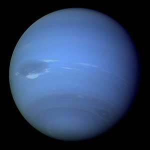
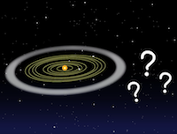

Voyager 1 y 2: La Misión Interestelar
Imagen de Neptuno tomada por la nave espacial Voyager 2. Imagen crédito: NASA
La NASA ha capturado imágenes impresionantes de cada planeta de nuestro sistema solar. Incluso contamos con fotografías del distante Neptuno, como se muestra en la imagen de arriba.
Neptuno está demasiado lejos para que un astronauta pueda viajar hasta allí con una cámara. Entonces, ¿cómo tenemos imágenes de lugares tan remotos de nuestro sistema solar?
¡Gracias a dos naves espaciales llamadas Voyager 1 y Voyager 2, que fueron nuestros fotógrafos interplanetarios!

Representación artística de una de las naves espaciales Voyager. Imagen crédito: NASA
Las naves espaciales Voyager 1 y Voyager 2 fueron lanzadas desde la Tierra en 1977 como dos audaces flechas de curiosidad, disparadas hacia el vasto océano del cosmos. Su misión era explorar los titanes de nuestro sistema solar, Júpiter y Saturno, así como los mundos que yacen más allá del horizonte estelar. Este viaje fue una odisea sin precedentes; un desafío que ninguna creación humana había emprendido antes. A lo largo de su travesía, las Voyager se convirtieron en ojos cósmicos, capturando decenas de miles de imágenes que revelaron secretos ocultos en los cielos. Sus lentes se convirtieron en portadores de maravillas, permitiéndonos vislumbrar por primera vez las tormentas furiosas y las nubes danzantes de Júpiter, así como la delicada arquitectura de los anillos de Saturno, como si fueran joyas suspendidas en la oscuridad del espacio.
Imagen de las tormentas en Júpiter tomadas por la nave espacial Voyager 1. Crédito: NASA
Voyager 1 y 2 se convirtieron en exploradores intrépidos, revelando un mundo de sorpresas en su travesía. En su camino, encontraron volcanes activos en Io, una de las lunas de Júpiter, como si el propio satélite estuviera vivo, respirando fuego en el frío del espacio. Además, Voyager 2 se aventuró a capturar imágenes de Urano y Neptuno, dos gigantes en la distancia, añadiendo más capítulos a la historia de su viaje. Juntas, estas astronaves desvelaron la existencia de 22 lunas, como si estuvieran descubriendo un jardín oculto en el vasto universo.
Ahora, las Voyager se han convertido en mensajeras solitarias, alejándose de nosotros como dos faros que se desvanecen en el horizonte. Han cruzado el umbral hacia el espacio interestelar, adentrándose en la inmensidad entre las estrellas. Ninguna otra nave ha recorrido tal distancia, dejando tras de sí un legado de descubrimientos y sueños que resuenan en el eco del cosmos.
¿A DONDE IRA VOYAGER DESPUES?
Ambas naves Voyager son como mensajeros eternos, enviando sus susurros de conocimiento de regreso a la Tierra, como ecos de un pasado lejano que nos cuentan sobre las condiciones en los reinos distantes del sistema solar y el vasto espacio interestelar.
Con un corazón lleno de energía y combustible, los Voyager están preparados para seguir operando hasta el 2025 y más allá, como centinelas que vigilan el universo. Sin embargo, llegará un momento en que su voz se apagará, y ya no podrán comunicarse con nosotros. Pero, a menos que algo interrumpa su viaje, seguirán surcando el cosmos, cruzando nuevas constelaciones y estrellas, como viajeros incansables en una travesía que se extenderá por miles de años.
Dentro de cada nave, un mensaje aguarda, un disco de oro que brilla como un faro de esperanza. Este disco es un cofre del tesoro que contiene escenas y sonidos de la Tierra, así como melodías y saludos en múltiples lenguas. Si alguna vez una vida inteligente se cruzara con estas naves errantes, encontraría un fragmento de nuestra esencia, un puente que conecta mundos y culturas, permitiéndoles conocer nuestra historia y la belleza de nuestra humanidad.